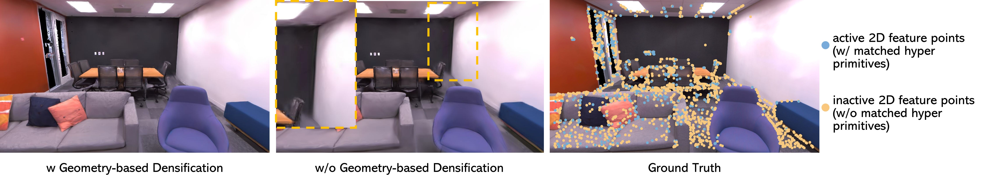

Photo-SLAM: Real-time Simultaneous Localization and Photorealistic Mapping for Monocular, Stereo, and RGB-D Cameras

Abstract
The integration of neural rendering and the SLAM system recently showed promising results in joint
localization and photorealistic view reconstruction. However, existing methods, fully relying on implicit representations, are so resource-hungry
that they cannot run on portable devices, which deviates from the original intention of SLAM. In this paper, we present Photo-SLAM, a novel SLAM
framework with a hyper primitives map. Specifically, we simultaneously exploit explicit geometric features for localization and learn implicit
photometric features to represent the texture information of the observed environment. In addition to actively densifying hyper primitives based
on geometric features, we further introduce a Gaussian-Pyramid-based training method to progressively learn multi-level features, enhancing
photorealistic mapping performance. The extensive experiments with monocular, stereo, and RGB-D datasets prove that our proposed system
Photo-SLAM significantly outperforms current state-of-the-art SLAM systems for online photorealistic mapping, e.g., PSNR is 30\% higher and
rendering speed is hundreds of times faster in the Replica dataset. Moreover, the Photo-SLAM can run at real-time speed using an embedded platform
such as Jetson AGX Orin, showing the potential of robotics applications.
How it works
1. Introduce the concept of hyper primitives map.
Details
Hyper primitives are defined as a set of point clouds associated with ORB features, rotation, scaling, ensity,
and spherical harmonic (SH) coefficients. The hyper primitives map allows the system to efficiently optimize
tracking using a factor graph solver and learn the corresponding mapping by backpropagating the loss between
the original images and rendering images.

2. Geometry-based densification
Details
We argue that 2D geometric feature points spatially distributed in the frames essentially represent the region
with a complex texture that requires more hyper primitives. However, less than 30% of 2D geometric feature points
of frames are active and have corresponding 3D points, especially for non-RGB-D scenarios. Therefore, we actively
create additional temporary hyper primitives based on the inactive 2D feature points.

3. Gaussian-pyramid-based learning, a new progressive training method.
Details
Progressive training is a widely used technology in neural rendering to accelerate the optimization process.
Some methods have been proposed to reduce training time while achieving better rendering quality.
To enhance performance with efficient multi-level features learning online, we propose Gaussian-pyramid-based learning.
At the beginning training step, the hyper primitives are supervised by the highest level of the pyramid, i.e. level n.
As training iteration increases, we not only densify hyper primitives but also reduce the pyramid level and obtain a
new ground truth until reaching the bottom of the Gaussian pyramid.

Results
Citation
@inproceedings{hhuang2024photoslam,
title = {Photo-SLAM: Real-time Simultaneous Localization and Photorealistic Mapping for Monocular, Stereo, and RGB-D Cameras},
author = {Huang, Huajian and Li, Longwei and Cheng Hui and Yeung, Sai-Kit},
booktitle = {Proceedings of the IEEE/CVF Conference on Computer Vision and Pattern Recognition},
year = {2024},
}